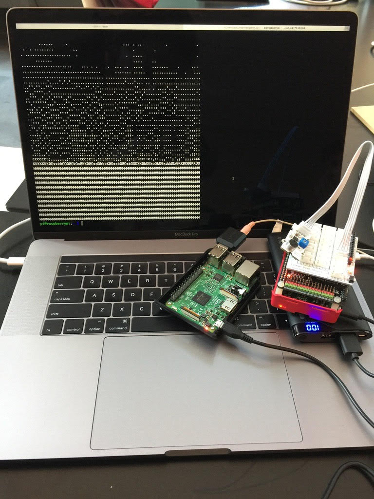

Deep Learning with Sound and Lesson 4
Posted on Thu 25 May 2017 in events
Great meet up last week, thanks Grant and John for taking us through your recent work. In the meet up we covered part of lesson 4 with a focus on collaborative filtering and briefly touching on the area of embeddings NLP Representations word2vec Note these links just scratch the surface. Embeddings are a very rich area of research.
In session 2 John took us through the interesting area of using conv nets to process sound and potential for running this on embedded devices. This work was done over a weekend for the Unearthed Perth hackerthon. Here is a picture from the competition of the Pi calculating a realtime spectrogram (courtesy of Sam Bishop) which was then run through the conv net.

and we wound up the session with a recent paper from google on learning joint sound and vision on Conv nets This coming Thursday speakers are as follows:
- Austin Shen will lead us through session 1
- Michael Clark will lead us though session 2
Looking forward to seeing you folk on Thursday.
Regards Sean